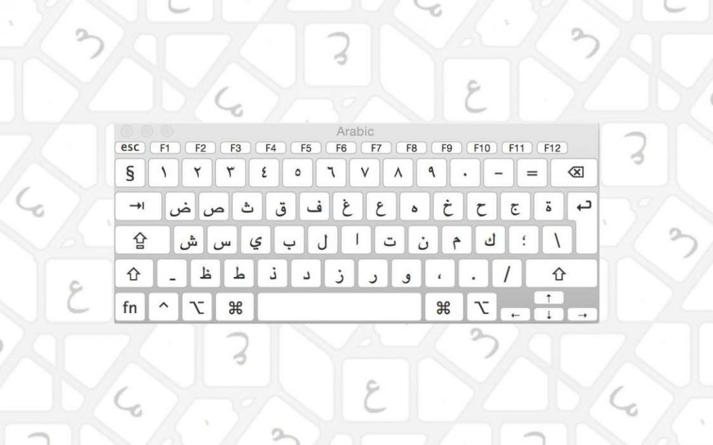

Alfabeto Árabe

Links atuais
áudio soundcloud do livro Kallimni Arabi bishweesh
outros
Todas as Letras com Formas e Exemplos
📌 Introdução
O alfabeto árabe tem 28 letras e escreve-se da direita para a esquerda. A maioria das letras muda de forma dependendo da sua posição na palavra:
- Isolada: quando a letra está sozinha
- Inicial: no início da palavra
- Medial: no meio da palavra
- Final: no fim da palavra
Algumas letras não se ligam à letra seguinte e só têm 2 formas (isolada/final e inicial/medial).
ALFABETO COMPLETO
1. Alif - ا
| Forma | Isolada | Inicial | Medial | Final |
|---|---|---|---|---|
| Árabe | ا | ا | ـا | ـا |
Nota: Alif não se liga à letra seguinte
Som: “a” longo (aa) ou usado como suporte para hamza
Exemplos: - أنا - ana - Eu - بابا - baba - Papá - سارة - sara - Sara (nome)
2. Baa - ب
| Forma | Isolada | Inicial | Medial | Final |
|---|---|---|---|---|
| Árabe | ب | بـ | ـبـ | ـب |
Som: “b” como em “bola”
Exemplos: - بيت - beet - Casa - كتاب - kitab - Livro - حبيب - 7abib - Querido/amado - باب - bab - Porta
3. Taa - ت
| Forma | Isolada | Inicial | Medial | Final |
|---|---|---|---|---|
| Árabe | ت | تـ | ـتـ | ـت |
Som: “t” como em “tudo”
Exemplos: - تلاتة - talata - Três - بنت - bent - Rapariga/filha - بيتي - beety - Minha casa - توت - toot - Amora
4. Thaa - ث
| Forma | Isolada | Inicial | Medial | Final |
|---|---|---|---|---|
| Árabe | ث | ثـ | ـثـ | ـث |
Som: “th” como em inglês “think”
Exemplos: - ثلاثة - talata - Três (MSA - no egipcio usa-se ت) - مثل - masal - Exemplo - باحث - ba7es - Pesquisador
5. Jeem - ج
| Forma | Isolada | Inicial | Medial | Final |
|---|---|---|---|---|
| Árabe | ج | جـ | ـجـ | ـج |
Som: “g” como em “gato” (no Egipto) / “j” como em francês “je” (noutros dialectos)
Exemplos: - جامعة - gam3a - Universidade - راجل - ragel - Homem - فرج - farag - Alívio
6. 7aa - ح
| Forma | Isolada | Inicial | Medial | Final |
|---|---|---|---|---|
| Árabe | ح | حـ | ـحـ | ـح |
Som: “7” - som expirado do fundo da garganta
Exemplos: - حب - 7ob - Amor - صباح - saba7 - Manhã - فرح - fara7 - Alegria - حلو - 7elw - Doce/bonito
7. Khaa - خ
| Forma | Isolada | Inicial | Medial | Final |
|---|---|---|---|---|
| Árabe | خ | خـ | ـخـ | ـخ |
Som: “5” ou “kh” - como “j” espanhol ou “ch” alemão
Exemplos: - خمسة - 5amsa - Cinco - أخ - a5 - Irmão - مطبخ - matba5 - Cozinha - خير - 5eer - Bem/bondade
8. Daal - د
| Forma | Isolada | Inicial | Medial | Final |
|---|---|---|---|---|
| Árabe | د | د | ـد | ـد |
Nota: Daal não se liga à letra seguinte
Som: “d” como em “dado”
Exemplos: - دكتور - doktor - Médico - يد - eed - Mão - بلد - balad - País - درس - dars - Aula
9. Dhaal - ذ
| Forma | Isolada | Inicial | Medial | Final |
|---|---|---|---|---|
| Árabe | ذ | ذ | ـذ | ـذ |
Nota: Dhaal não se liga à letra seguinte
Som: “th” como em inglês “this”
Exemplos: - ذهب - dahab - Ouro - أستاذ - ostaz - Professor - لذيذ - laziz - Delicioso
10. Raa - ر
| Forma | Isolada | Inicial | Medial | Final |
|---|---|---|---|---|
| Árabe | ر | ر | ـر | ـر |
Nota: Raa não se liga à letra seguinte
Som: “r” vibrante (como em espanhol)
Exemplos: - رجل - ragel - Homem - بحر - ba7r - Mar - نور - noor - Luz - رخيص - re5ees - Barato
11. Zaay - ز
| Forma | Isolada | Inicial | Medial | Final |
|---|---|---|---|---|
| Árabe | ز | ز | ـز | ـز |
Nota: Zaay não se liga à letra seguinte
Som: “z” como em “zebra”
Exemplos: - زمان - zaman - Tempo/há muito tempo - جوز - gooz - Marido - لوز - looz - Amêndoa
12. Seen - س
| Forma | Isolada | Inicial | Medial | Final |
|---|---|---|---|---|
| Árabe | س | سـ | ـسـ | ـس |
Som: “s” como em “sol”
Exemplos: - ستة - setta - Seis - درس - dars - Aula - أسد - asad - Leão - سلام - salam - Paz
13. Sheen - ش
| Forma | Isolada | Inicial | Medial | Final |
|---|---|---|---|---|
| Árabe | ش | شـ | ـشـ | ـش |
Som: “sh” como em “chá”
Exemplos: - شغل - sho3’l - Trabalho - عيش - 3eesh - Pão - مش - msh - Não - شاي - shay - Chá
14. Saad - ص
| Forma | Isolada | Inicial | Medial | Final |
|---|---|---|---|---|
| Árabe | ص | صـ | ـصـ | ـص |
Som: “s” enfático (mais profundo)
Exemplos: - صباح - saba7 - Manhã - مصر - masr - Egipto - خاص - 5as - Especial - صحى - sa7a - Acordou
15. Daad - ض
| Forma | Isolada | Inicial | Medial | Final |
|---|---|---|---|---|
| Árabe | ض | ضـ | ـضـ | ـض |
Som: “d” enfático (mais profundo)
Exemplos: - ضحك - da7ek - Riu - أبيض - abyad - Branco - ضرب - darab - Bateu
16. Taa - ط
| Forma | Isolada | Inicial | Medial | Final |
|---|---|---|---|---|
| Árabe | ط | طـ | ـطـ | ـط |
Som: “t” enfático (mais profundo)
Exemplos: - طماطم - tamatem - Tomate - بط - bat - Pato - خط - 5at - Linha
17. Zaa - ظ
| Forma | Isolada | Inicial | Medial | Final |
|---|---|---|---|---|
| Árabe | ظ | ظـ | ـظـ | ـظ |
Som: “z” enfático (mais profundo)
Exemplos: - ظرف - zarf - Envelope - نظيف - nazif - Limpo - حظ - 7az - Sorte
18. Ain - ع
| Forma | Isolada | Inicial | Medial | Final |
|---|---|---|---|---|
| Árabe | ع | عـ | ـعـ | ـع |
Som: “3” - som gutural profundo da garganta
Exemplos: - عشرة - 3ashara - Dez - عيش - 3eesh - Pão - سبعة - sab3a - Sete - علم - 3elm - Ciência
19. Ghain - غ
| Forma | Isolada | Inicial | Medial | Final |
|---|---|---|---|---|
| Árabe | غ | غـ | ـغـ | ـغ |
Som: “3’” ou “gh” - como “r” francês/alemão
Exemplos: - غالي - 3’aali - Caro - لغة - lo3’a - Idioma - صغير - so3’ayar - Pequeno - غير - 3’er - Excepto
20. Faa - ف
| Forma | Isolada | Inicial | Medial | Final |
|---|---|---|---|---|
| Árabe | ف | فـ | ـفـ | ـف |
Som: “f” como em “faca”
Exemplos: - فين - feen - Onde - فهم - fehm - Entendeu - صيف - seef - Verão - فطار - ftar - Café da manhã
21. Qaaf - ق
| Forma | Isolada | Inicial | Medial | Final |
|---|---|---|---|---|
| Árabe | ق | قـ | ـقـ | ـق |
Som: “2” no Egipto (hamza) / “q” noutros dialectos
Exemplos: - قهوة - 2ahwa - Café - قلب - 2alb - Coração - فوق - foo2 - Em cima - قال - 2al - Disse
22. Kaaf - ك
| Forma | Isolada | Inicial | Medial | Final |
|---|---|---|---|---|
| Árabe | ك | كـ | ـكـ | ـك |
Som: “k” como em “casa”
Exemplos: - كتاب - kitab - Livro - كلب - kalb - Cão - سمك - samak - Peixe - كويس - kwayes - Bom
23. Laam - ل
| Forma | Isolada | Inicial | Medial | Final |
|---|---|---|---|---|
| Árabe | ل | لـ | ـلـ | ـل |
Som: “l” como em “lua”
Exemplos: - لغة - lo3’a - Idioma - ليه - leeh - Por quê - جميل - gamil - Bonito - ليل - leel - Noite
24. Meem - م
| Forma | Isolada | Inicial | Medial | Final |
|---|---|---|---|---|
| Árabe | م | مـ | ـمـ | ـم |
Som: “m” como em “mãe”
Exemplos: - مصر - masr - Egipto - اسم - esm - Nome - تمام - tamam - Ok/perfeito - ماء - maya - Água
25. Noon - ن
| Forma | Isolada | Inicial | Medial | Final |
|---|---|---|---|---|
| Árabe | ن | نـ | ـنـ | ـن |
Som: “n” como em “não”
Exemplos: - نور - noor - Luz - بنت - bent - Rapariga - أنا - ana - Eu - نام - nam - Dormiu
26. Haa - ه
| Forma | Isolada | Inicial | Medial | Final |
|---|---|---|---|---|
| Árabe | ه | هـ | ـهـ | ـه |
Som: “h” aspirado suave
Exemplos: - هو - howa - Ele - فهم - fehm - Entendeu - نهار - nahar - Dia - ليه - leeh - Por quê
27. Waaw - و
| Forma | Isolada | Inicial | Medial | Final |
|---|---|---|---|---|
| Árabe | و | و | ـو | ـو |
Nota: Waaw não se liga à letra seguinte
Som: “w” como em “uau” / vogal longa “oo” / “u”
Exemplos: - ولد - walad - Rapaz - نور - noor - Luz - يوم - yum - Dia - و - w - E
28. Yaa - ي
| Forma | Isolada | Inicial | Medial | Final |
|---|---|---|---|---|
| Árabe | ي | يـ | ـيـ | ـي |
Som: “y” como em “iogurte” / vogal longa “ee” / “i”
Exemplos: - يوم - yum - Dia - بيت - beet - Casa - كبير - kebeer - Grande - في - fi - Em
LETRAS ESPECIAIS
Hamza - ء
A hamza não é uma letra verdadeira, mas um sinal que representa uma paragem glotal. Pode aparecer sozinha ou sobre/sob outras letras:
- ء - hamza isolada
- أ - hamza sobre alif
- إ - hamza sob alif
- ؤ - hamza sobre waaw
- ئ - hamza sobre yaa
Exemplos: - سؤال - so2al - Pergunta - أنا - ana - Eu - شيء - shay2 - Coisa - قرأ - 2ara - Leu
Taa Marbouta - ة
Esta letra só aparece no fim das palavras e marca o feminino:
- ة - taa marbouta (isolada/final)
Exemplos: - مدرسة - madrasa - Escola - ساعة - sa3a - Hora/relógio - جامعة - gam3a - Universidade - كويسة - kwayesa - Boa (fem.)
LIGAÇÕES ESPECIAIS
Laam-Alif - لا
Quando ل (laam) encontra ا (alif), formam uma ligação especial:
- لا - laa
Exemplos: - لا - la2 - Não - لازم - lazem - É necessário - ولا - walla - Ou
VOGAIS E SINAIS DIACRÍTICOS
O árabe escrito normalmente não mostra vogais curtas. Elas são indicadas por sinais diacríticos (raramente usados em textos modernos):
Vogais Curtas
- َ◌ (fat7a) - “a” curto
- ِ◌ (kasra) - “i” curto
- ُ◌ (damma) - “u” curto
Vogais Longas
- ا (alif) - “aa”
- ي (yaa) - “ee” / “ii”
- و (waaw) - “oo” / “uu”
Outros Sinais
- ْ◌ (sukoon) - ausência de vogal
- ّ◌ (shadda) - duplicação da letra
- ً◌ (tanween) - terminação “-an”
NÚMEROS ÁRABES
Os algarismos árabes orientais são diferentes dos ocidentais:
| Ocidental | 0 | 1 | 2 | 3 | 4 | 5 | 6 | 7 | 8 | 9 |
|---|---|---|---|---|---|---|---|---|---|---|
| Árabe | ٠ | ١ | ٢ | ٣ | ٤ | ٥ | ٦ | ٧ | ٨ | ٩ |
Exemplos: - ٢٢ = 22 - ١٠ = 10 - ٢٠٢٥ = 2025
DICAS PARA APRENDER
Letras que não se ligam à seguinte: ا د ذ ر ز و
- Só têm duas formas (isolada/final)
Letras parecidas (distinguidas pelos pontos):
- ب (1 ponto baixo) ت (2 pontos cima) ث (3 pontos cima)
- ج (1 ponto baixo) ح (sem ponto) خ (1 ponto cima)
- د (sem ponto) ذ (1 ponto cima)
- ر (sem ponto) ز (1 ponto cima)
- س (sem pontos) ش (3 pontos cima)
- ص (sem ponto) ض (1 ponto cima)
- ط (sem ponto) ظ (1 ponto cima)
- ع (sem ponto) غ (1 ponto cima)
Prática: Começa por reconhecer as letras isoladas, depois aprende as formas conectadas.
Escrita: Pratica escrever da direita para a esquerda, ligando as letras conforme apropriado.
Guia do Alfabeto Árabe - Egipcio Coloquial Foco: Reconhecimento e escrita das letras
NOTAS IMPORTANTES
Letras Especiais no Árabe Franco
- 2 = ء (hamza) - som de paragem glotal
- 3 = ع (ain) - som gutural
- 3’ ou gh = غ (ghayn) - som como “r” francês/alemão
- 5 = خ (kha) - som como “j” em espanhol ou “ch” alemão
- 7 = ح (ha) - som de “h” expirado
Dicas
- Q (qaf) no Egipto = pronunciado como 2 (hamza)
- Qahwa → 2ahwa
- Usa-se “El” antes de palavras = “o/a”
- W + vogal = contracção (w + enta = wenta)
- Países sempre no feminino
- “Ya” antes do nome = vocativo informal (Ya Salma = Ó Salma)
Documento organizado a partir de aulas com Sara/Adelson - italki Foco: Árabe Egípcio Coloquial